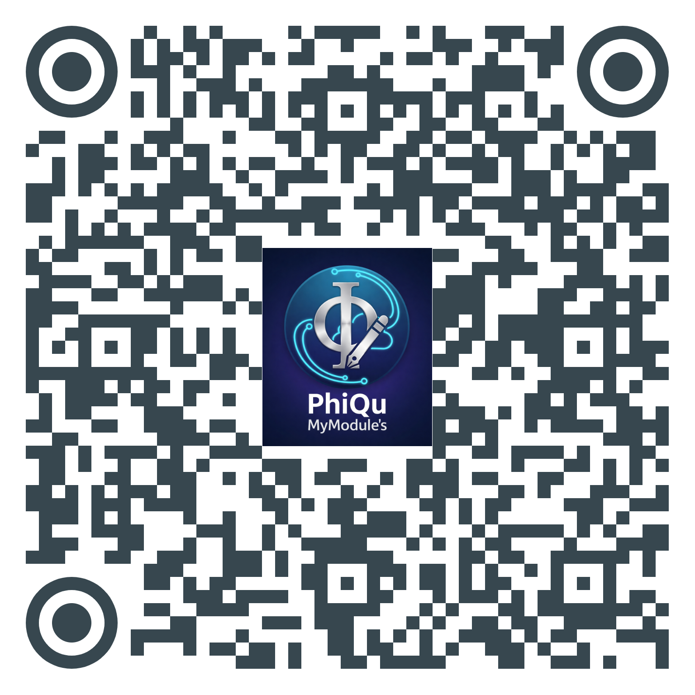
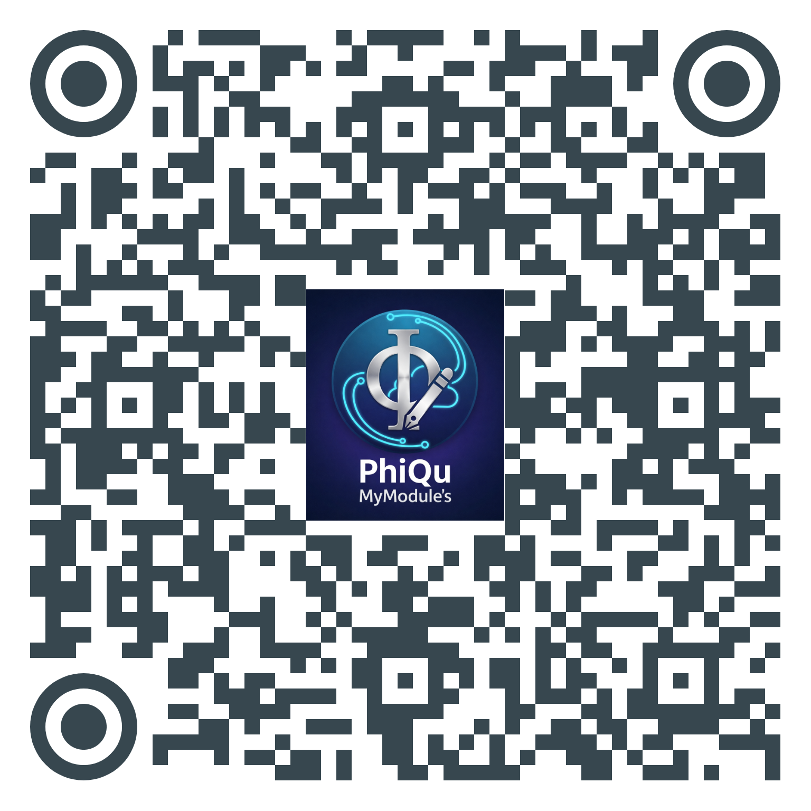
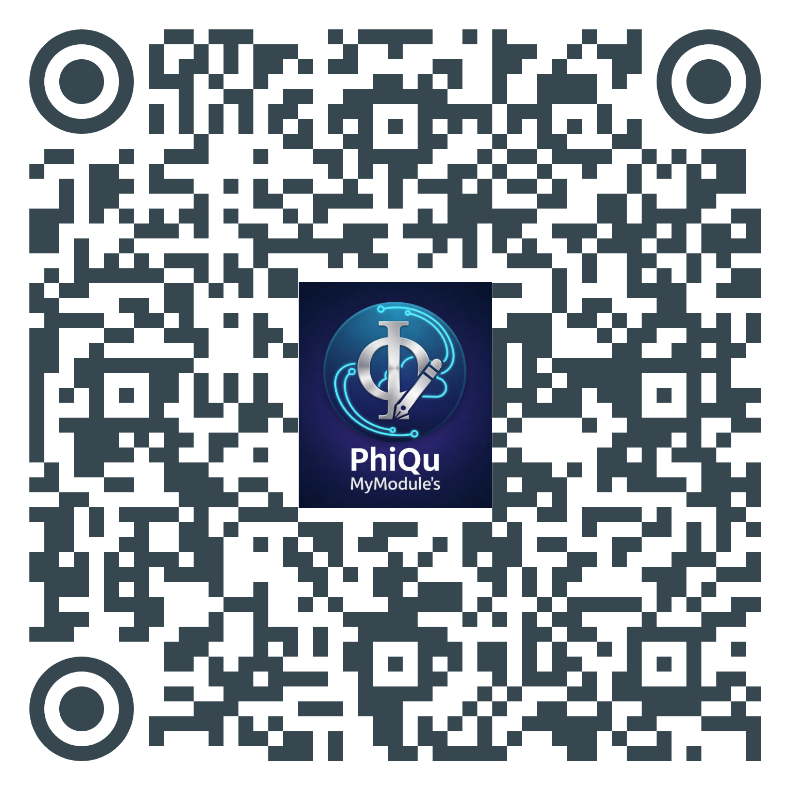

📸 Lembar Kerja Peserta Didik
Kelompokmu sudah dipilih sejak kamu selesai mengerjakan tes diagnostik awal. Tapi, jika setelah mengerjakan soal diagnostik tidak diarahkan ke LKPD. kamu bisa scan salah satu LKPD sesuai dengan nilai yang kamu dapatkan tadi ya..

Kelompok 1

Kelompok 2

Kelompok 3
Silahkan Presentasikan Hasil LKPD Anda